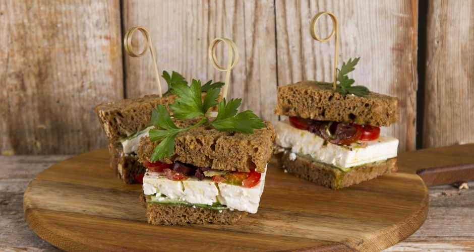

Greek sandwich recipe

Description
A very easy sandwich with a few ingredients, perfect for a quick snack.
Ingredients
- 6 slices bread, whole wheat
- 1 tablespoon olive oil
- 1/2 cucumber, slices into thin rounds
- 200g of feta cheese, cut into tree large pieces
- 6 cherry tomatoes, sliced into thin rounds
- 50g olives, pitted and cut into rounds
- 2-3 sprigs oregano, fresh, only the leaves
- pepper, freshly ground
Steps
- Place the 3 slices of bread on a clean working surface, one next to the other.
- Drizzle each slice with some extra virgin olive oil.
- Top each slice with cucumber, feta, cherry tomatoes, olives, spring onion and fresh oregano leaves.
- Drizzle with some more extra virgin olive oil, freshly ground pepper and cover with the remaining 3 slices of bread.